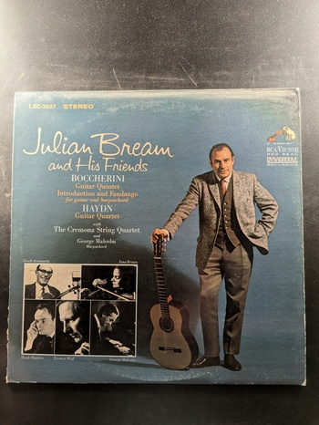

The Baroque Lute
Walter Gerwig
Nonesuch H-71289
The Art of the Lute
Walter Gerwig
RCA Victrola VICS-1362
Lute Music of the German Renaissance
Walter Gerwig
the musical heritage society inc. MHS 1188
Baroque Guitar
Julian Bream
RCA Victor Red Seal LSC-2878
Sonatas for Lute and Harpsichord
Julian Bream/George Malcolm
RCA Red Seal LSC-3100
Musik für Laute
Konrad Ragossnig, Renaissance-Laute
Archiv Produktion 2533 302
The Golden Age of English Lute Music
Julian Bream
RCA Red Seal LSC-3196
La Guitare Royale
Konrad Ragossnig
Archiv Produktion 2533 365
Musik für 2 & 3 Lauten
Konrad Ragossnig, Jürgen Hübscher, Dieter Kirsch
Archiv Produktion 2533 353

Musik für Laute: Music for Lute - Musique pour luth
Konrad Ragossnig, Renaissance-Laute
Archiv Produktion 2533 157
Musik für Laute: Italien - Italy - Italie
Konrad Ragossnig, Renaissance-Laute
Archiv Produktion 2533 173
Musik für Laute: IV. Polen-Ungarn
Konrad Ragossnig, Renaissance-Laute
Archiv Produktion 2533 294
Music of Spain
Julian Bream
RCA Red Seal ARL1-0346
400 Years of the Classical Guitar
Alirio Diaz
Vanguard 3155
J.S. Bach Lute Suites Nos. 1 and 2
Julian Bream
RCA Victor Red Seal LSC-2896
Julian Bream and His Friends
Julian Bream
RCA Victor Red Seal LSC-3027
Lute Music of John Dowland
Julian Bream
RCA Red Seal ARL1-1491
plays The Entertainer and selected works by Scott Joplin
Carlos Barbosa-Lima
Concord Jazz CJ-37
The Virtuoso Guitar
Alirio Diaz
Vanguard HM 32 SD
Jazz Guitar Bach
André Benichou and His Well-Tempered Three
Nonesuch H-71069
Lute Music from the Royal Courts of Europe
Julian Bream
RCA Victor Red Seal LSC-2924
The First Nowell (A Nativity Play)
Ralph Vaughan Williams
The Musical Heritage Society Inc. MHS 3262
Cantata No. 208, Was mir behagt, ist nur die muntre Jagd ('Hunt' Cantata)
Johann Sebastian Bach
The Musical Heritage Society Inc. MHS 3297
{kind=link}
{kind=link}
{kind=link}
{kind=link}
{kind=link}
{kind=link}
{kind=link}
{kind=link}
{kind=link}

{kind=link}
{kind=link}
{kind=link}
{kind=link}
{kind=link}
{kind=link}
{kind=link}
{kind=link}
{kind=link}
{kind=link}
{kind=link}
{kind=link}
{kind=link}